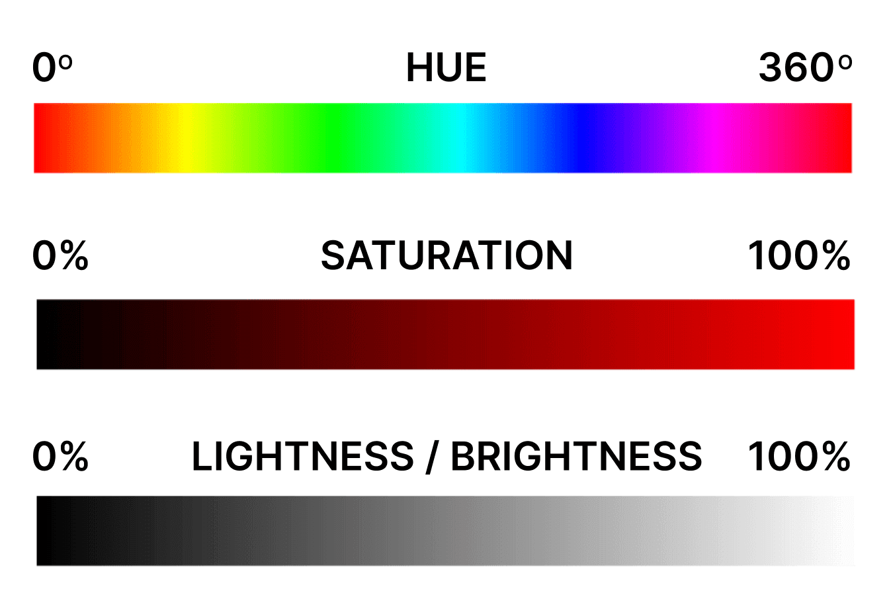
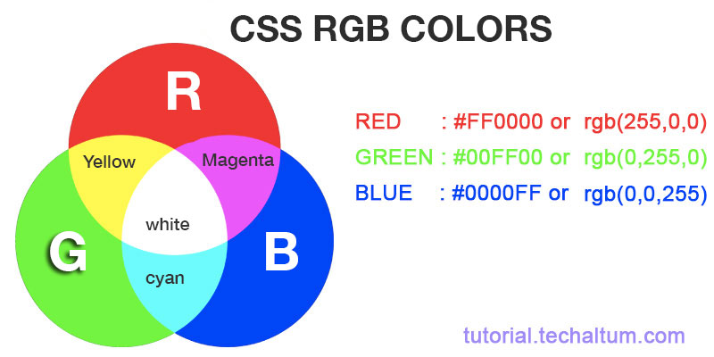
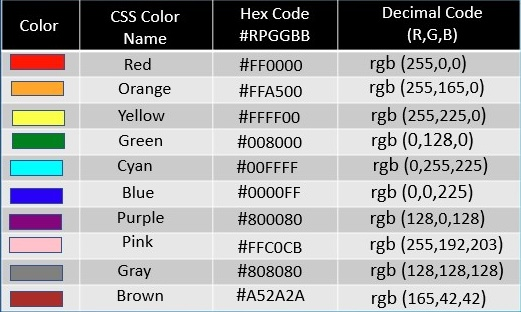
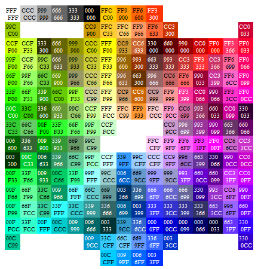

Build Your Own Cheat Sheet
Before Beginning
!DOCTYPE html Tells the computer what kind of document you will be writing.
html /html must follow after which contains all html code.
link rel="stylsheet href=" styles.css links CSS style sheet to HTML document
What is Coding vs Programming
Programming is the mental process of thinking up instructions to give to a machine (like a computer).
Coding is the process of transforming those ideas into a written language that a computer can understand.
A Quick Cheat Sheet For Fonts
| Font-Family | Font-Weight | Font-Style | Text-Transformation | Text-Decoration |
| Sans-Serif | Lighter | Italic | Uppercase | Underline |
| Serif | Light | Oblique | Lowercase | Overline |
| Monospace | Bold | capitalize | Line through |
Inspiration
Many tears have been shed over a missing semicolon (;) a symbol that a lot of programming languages use to denote the end of a line. While learning to program may initially be frustrating, if you choose to stick with it, you'll be able to make some brilliant things.
Border Box
- Margin - the white space around this green box
- Border - the dark green border
- Padding - the light green space around these words
Box Position Relative - I have moved this box 300px to the left and 20px down by using top, this moves the whole physical box giving the overlapping
Box Position Absolute- I have moved this box 300px to the left but this shortens the box to hold only what words are contained (I can see this being my favorite way to design websites)
Box Position Fixed - this box does not move. When using the top/bottom/left/right in CSS it formats it to the page not it's surroundings (best for headers)
Using Z-index only works if you are using the position property.
Box Position Sticky -
HSL Colors
Hue Saturation Lightness
Hue -
red is 0, green is 120, blue is 240, then back to red 360
Saturation -
grey starts at 0% and gets richer at 100%
Lightness -
0% is black and gets lighter as you move toward 100%
HSl is written in CSS like:
hsl(120, 60%, 70%);
Adding an A after RGB or HSL
A stands for Alpha
Alpha -
0 is transparent, .5 half-transparent, 1 opaque
RGB Colors
Numeric values that describe a mix of red, green, blue
RGB color scheme is convenient because it's very close to how computers represent colors internally.
Red -
rgb (255, 0, 0)
Green -
rgb (0, 255, 0)
Blue -
rgb (0, 0, 255)
Hex Codes
I will add this later I can't remeber at the moment how to figure out how to read the hex codes but here is a helpful chart.